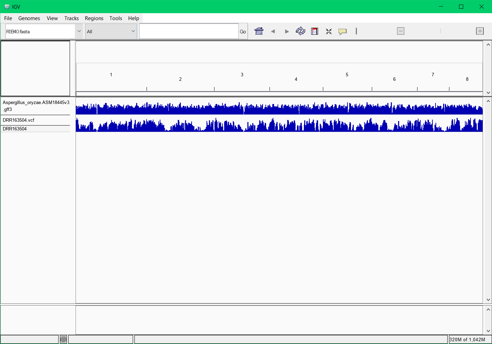
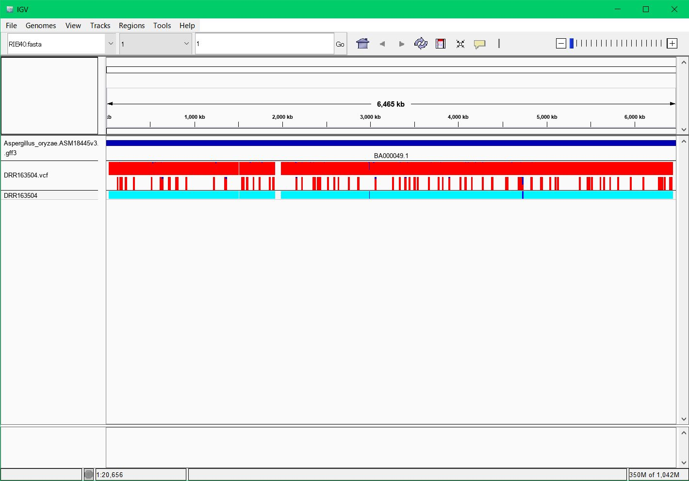
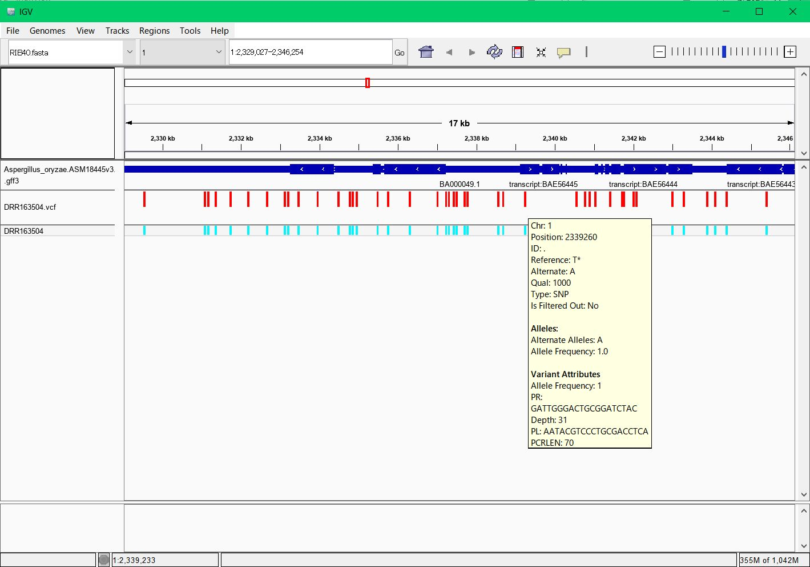
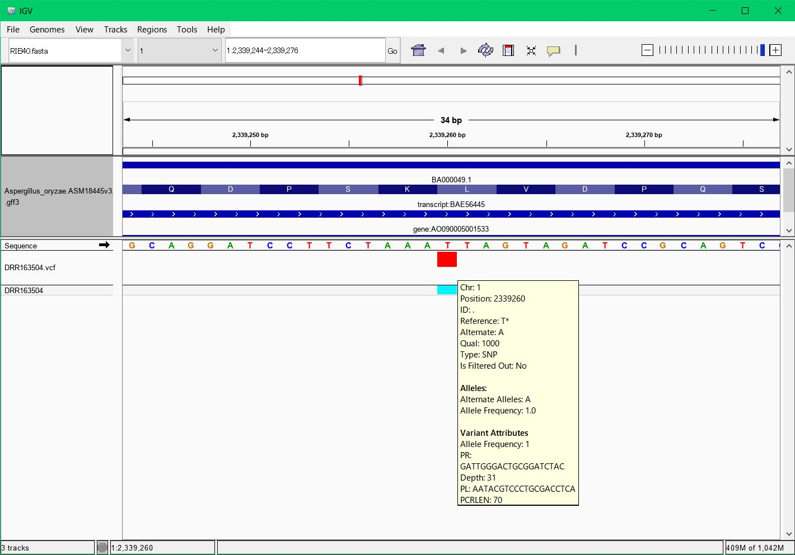

|     |
|
$ sudo apt update $ sudo apt upgrade $ sudo apt install curl $ sudo apt install git $ sudo apt install sra-toolkit $ git clone https://github.com/akiomiyao/ped.git
$ tar xvfz sratoolkit.2.x.x-ubuntu64.tar.gz $ cd sratoolkit.2.x.x-ubuntu64/bin $ sudo mv fastq-dump-orig.2.x.x /usr/local/bin/fastq-dumptar コマンドで展開したfastq-dumpを/usr/local/binに移せば大丈夫です。-orig以下の名前は削って、fastq-dumpという名称にして移します。
$ cd ped $ git pull $ perl download.pl accession=DRR163504git pullで最新のスクリプトに更新されます。git pullは毎回行う必要はありませんが、プログラムが更新されている場合はpullしてください。
$ perl ped.pl target=DRR163504,ref=RIB40麹菌の参照配列は設定済みなので自動的にダウンロードして解析用データを作成して一連の作業が自動的に進みます。
$ sudo apt install docker $ sudo apt install docker.io
$ sudo docker pull akiomiyao/ped上記のコマンドをコピーしてターミナルウインドウにペーストして実行してください。
$ sudo docker run -w /ped -v `pwd`:/work akiomiyao/ped perl download.pl accession=DRR163504,wd=/work $ sudo docker run -w /ped -v `pwd`:/work akiomiyao/ped perl check_length.pl target=DRR163504,wd=/work $ sudo docker run -w /ped -v `pwd`:/work akiomiyao/ped perl ped.pl target=DRR163504,ref=RIB40,wd=/work